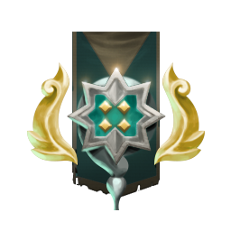
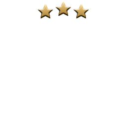

1
Insira seu MMR
Digite ou ajuste o seu Rating de Partida Competitiva
MMR
Simular Partida (Glicko):
Arauto a Arconte: até +40 🚀
Pular para Categoria:
Copiado para a área de transferência!
2
Medalha Conquistada
Classificação e percentual em tempo real


ARCONTE 3
Archon • Tier 4 • 3 Estrelas
Inspirado em: Cetro Divino de Eul
🧭 Jornada da Sua Medalha
Valores aproximados conforme dados da Dota 2 Wiki Fandom📊 Tabela Completa de Classificações Sazonais
Todas as medalhas, estrelas e seus respectivos valores de MMR mínimo
| Medalha | Nível & Estrela | MMR Mínimo | Faixa até Próxima | Item Inspirador | Ação |
|---|
📖 Como Funciona o Sistema de Medalhas
- Estimativas da Comunidade: A Valve não divulga publicamente a fórmula exata de corte para cada medalha; os valores refletem as observações consolidadas pela comunidade na Dota 2 Wiki.
- Porcentagem da Medalha: A porcentagem exibida abaixo da medalha no jogo calcula o quão próximo seu MMR está de desbloquear a próxima estrela da categoria.
- 5 Estrelas por Nível: Desde a Temporada 4, cada categoria (Arauto até Divino) possui exatamente 5 estrelas.
- Imortal: Ao atingir 5620+ MMR, o jogador atinge a classificação Imortal e passa a disputar posição no ranking regional.
⚔️ Inspiração nos Itens do Dota 2
Você sabia? Cada medalha do Dota 2 foi desenhada com base em um item clássico do jogo:
Arauto Tango
Guardião Broquel (Buckler)
Cruzado Anel de Áquila
Arconte Cetro Divino de Eul
Lenda BKB (Bastão Preto)
Ancestral Machado Ilusório (Manta)
Divino Rapieira Divina
Imortal Égide do Imortal